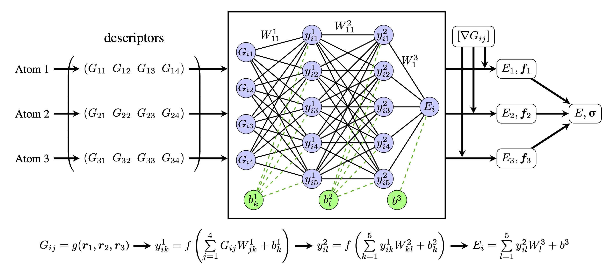

Energy calculation
Theory
The working principle of descriptor-based neural network potential can be explained in figure. Consider a single element system containing 3 atoms. A descriptor is chosen to map the coordinates of each atom to a feature vector with 4 components (Gij). Then, the vectors are taken as inputs to the same neural network, which is composed by 2 fully connected dense layers (each with 5 neurons) followed by a linear layer at the end. The neural network can be considered as a high dimensional function that is parametrized with weight matrices and bias vectors (which are optimized during training). The equations in Fig.1 demonstrates the mathematical process inside the neural network, where W1, W2 and W3 are the weight matrices of each layer, b1, b2 and b3 are the corresponding biases, and f is the activation function of dense layer. The direct outputs of the neural network are the potential energies of the atoms. In addition, the atomic forces can be calculated by using the gradients of the descriptors (which have to be generated before training). The neural network can be trained by minimizing a loss function (e.g. mean average error) that can be measured by using total potential energy, atomic forces and stress. Once the neural network is trained, it can be used to predict per-atom energy and forces as well as stress of a new atomic system which may have different number of atoms but have to be encoded by the same type of descriptors.
{kind=link}
Implementation
The neural network could be easily implemented with tensorflow.keras dense layers if one only wants to train the potential with potential energies. However, when adding atomic forces and stress as training variables, it is not convenient to apply the math described in Force and stress calculation in Keras packaged layers. Therefore, we use more flexible tf.module to implement this neural network.